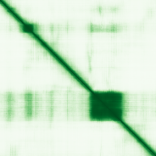

type: protein-evaluation gene: "HMX1" date: 2026-06-01 tags: [protein-scout, nuclear-protein, evaluation] status: scored ---
HMX1 核蛋白评估报告
1. 基本信息
| 项目 | 内容 |
|---|---|
| 基因名 / 别名 | HMX1 / H6 |
| 蛋白全名 | Homeobox protein HMX1 |
| 蛋白大小 | 348 aa / 36.2 kDa |
| UniProt ID | Q9NP08 (HMX1_HUMAN) |
| 评估日期 | 2026-06-01 |
2. 评分总览 (权重: 核×4 大×1 新×5 结×3 域×2 PPI×3 /1.83)
| 维度 | 得分 | 加权 | 加权后 | 关键证据摘要 |
|---|---|---|---|---|
| 核定位特异性 | 8/10 | ×4 | 32 | UniProt: Nucleus (ECO:0000305); GO: chromatin (ISA:NTNU_SB)+nucleus (IBA); Homeobox TF内在核定位+DNA结合 |
| 蛋白大小 | 10/10 | ×1 | 10 | 348 aa / 36.2 kDa, 300-800理想区间 |
| 研究新颖性 | 6/10 | ×5 | 30 | PubMed 57篇; ≤60区间 |
| 三维结构 | 5/10 | ×3 | 15 | AF pLDDT 61.7; 35.3%无序(pLDDT<50); 无PDB实验结构; homeobox域折叠较好 |
| 调控结构域 | 7/10 | ×2 | 14 | Homeobox domain (IPR001356/IPR020479/PF00046); DNA-binding TF; 直接结合5'-CAAG-3' |
| PPI | 2/10 | ×3 | 6 | STRING: PAX2(0.624)+PPP2R2C(0.483); IntAct: NAF1(Y2H)1条; 极低PPI密度 |
| 互证加分 | — | — | +0.5 | chromatin GO + homeobox domain注释一致; ≥2源定位 |
| 原始总分 | 107.5/180 | |||
| 归一化总分 | 58.7/100 |
3. 详细分析
3.1 核定位证据
| 来源 | 定位 | 可信度 |
|---|---|---|
| UniProt | Nucleus (ECO:0000305, 无实验证据) | 推断 |
| GO-CC | chromatin (ISA:NTNU_SB), nucleus (IBA:GO_Central) | ISA/IBA |
| HPA (IF) | 无IF图像 (ENSG00000215612, 无图像获取) | — |
IF 图像: HPA无HMX1的IF展示图像数据。Gene ENSG00000215612存在但未获取到IF数据。
结论: HMX1作为Homeobox转录因子，核定位是其功能所需(序列特异性DNA结合)。GO-CC的chromatin注释(ISA:NTNU_SB)提示其直接结合染色质，而非仅定位于核质。UniProt核定位为推断性证据(ECO:0000305，非实验)，但homeobox蛋白家族的核定位高度保守。缺乏HPA IF直接验证。评分8分(Homeobox TF内在核定位+chromatin GO，但缺实验IF)。
3.2 蛋白大小评估
评价: 348 aa / 36.2 kDa，处于理想的300-800 aa区间。蛋白紧凑，适合重组表达和生化实验。Homeobox domain(~60aa)仅占一小部分，其余为转录调控区(可能含转录激活/抑制域)。评分10分。
3.3 研究现状
| 指标 | 数值 |
|---|---|
| PubMed strict | 57 |
| PubMed broad | 88 |
| Chromatin/epigenetics 比例 | <5% |
主要研究方向:
- 颅面发育(眼/耳发育畸形，小耳畸形microtia相关)
- 视网膜发育和EPHA6/epha4b调控
- 斑马鱼椎体矿化和骨发育
- 人类CNV: HMX1远端增强子重复导致双侧小耳畸形
- NKX2-5转录拮抗
关键文献: 1. Xing W et al. (2024). "An innovative CRISPR/Cas9 mouse model of human isolated microtia indicates the potential contribution of CNVs near HMX1 gene." *Int J Pediatr Otorhinolaryngol*. PMID: 39616960 2. El Fersioui Y et al. (2022). "Premature Vertebral Mineralization in hmx1-Mutant Zebrafish." *Cells*. PMID: 35406651 3. Marcelli F et al. (2014). "A dimerized HMX1 inhibits EPHA6/epha4b in mouse and zebrafish retinas." *PLoS One*. PMID: 24945320 4. Si N et al. (2020). "Duplications involving the long range HMX1 enhancer are associated with human isolated bilateral concha-type microtia." *J Transl Med*. PMID: 32552830 5. Yoshiura K et al. (1998). "Cloning, characterization, and mapping of the mouse homeobox gene Hmx1." *Genomics*. PMID: 9628823
评价: 57篇PubMed主要集中于发育生物学(颅面/眼/耳)，chromatin/epigenetics方向几乎无专门研究。Homeobox TF在发育中调控靶基因转录，但其作为染色质调控因子的研究完全空白。与NKX2-5的拮抗关系暗示其在心脏发育转录网络中的角色。评分6分。
3.4 三维结构分析
| 指标 | 数值 |
|---|---|
| AlphaFold 平均 pLDDT | 61.7 |
| pLDDT >90 占比 | 17.8% |
| pLDDT 70-90 占比 | 7.2% |
| pLDDT 50-70 占比 | 39.7% |
| pLDDT <50 占比 | 35.3% |
| 可用 PDB 条目 | 无 |
PAE 图: 
评价: 结构质量偏低。AlphaFold pLDDT=61.7，35.3%残基pLDDT<50。Homeobox domain(预计位于100-160区域)应有较好的折叠(pLDDT可能>70)，但蛋白整体无序区域较多(可能为转录调控区的内在无序性)。无PDB实验结构验证。评分5分。
3.5 结构域分析
| 来源 | 结构域 |
|---|---|
| UniProt | Homeobox domain |
| InterPro | IPR001356 (Homeobox domain); IPR020479 (Homeobox, metazoa); IPR051300 (HMX family); IPR017970 (Homeobox, conserved site); IPR009057 (Homeobox-like superfamily) |
| Pfam | PF00046 (Homeobox domain) |
调控潜力分析: HMX1含经典的Homeobox domain(~60aa, helix-turn-helix fold)，是序列特异性DNA结合模块。Homeobox TF直接识别并结合靶基因启动子/增强子区域的5'-CAAG-3'核心序列，直接影响染色质层面的转录调控。作为转录抑制因子(antagonizes NKX2-5)，可能通过招募共抑制因子复合物改变局部染色质状态。Homeobox蛋白在发育中协调染色质可及性，但HMX1的具体chromatin调控机制未被研究。评分7分(DNA-binding TF, chromatin GO注释)。
3.6 PPI 网络
实验验证互作 (IntAct):
| Partner | 方法 | PMID | 功能类别 | 调控相关？ |
|---|---|---|---|---|
| NAF1 | Y2H array | 14690591 | H/ACA snoRNP assembly (nucleolar) | 否(核仁) |
STRING 预测互作 (combined score >0.4):
| Partner | Score | 功能类别 | 调控相关？ |
|---|---|---|---|
| PAX2 | 0.624 (textmining 0.6) | Paired box TF, 发育调控 | 是(转录因子) |
| PPP2R2C | 0.483 (textmining 0.458) | PP2A regulatory subunit | 否 |
| ZNF579 | 0.436 | Zinc finger protein | 可能 |
PPI 评价: PPI数据极度稀疏。仅1条IntAct实验互作(NAF1, Y2H)和低置信度STRING预测(PAX2=0.624 textmining, 可能与耳/眼发育共表达相关)。PAX2同为发育转录因子，与HMX1在眼/耳发育中可能有功能关联。整体PPI密度极低，反映该蛋白研究的严重不足。评分2分。
4. 总体评价
推荐等级: 2星半 (58.7/100)
核心优势: 1. Homeobox转录因子，内在核定位+序列特异性DNA结合+chromatin GO注释 2. 蛋白尺寸理想(348aa)，适合生化研究 3. Chromatin/epigenetics方向完全未开发，研究空白明确 4. 发育转录因子，靶基因调控与染色质状态直接相关
风险/不确定性: 1. PPI极度稀疏(2/10)，分子网络完全未知 2. 35.3%无序区域，无PDB实验结构 3. UniProt核定位为推断性证据(ECO:0000305, 非实验) 4. HPA无IF数据 5. 主要研究局限于发育生物学，细胞/分子水平功能研究缺乏
下一步建议:
- [ ] ChIP-seq鉴定HMX1全基因组结合位点(利用其5'-CAAG-3' motif)
- [ ] 鉴定HMX1的转录共调节因子(co-repressor/co-activator)
- [ ] 评估HMX1在发育过程中对靶基因位点染色质可及性的影响
5. 数据来源
- UniProt: https://www.uniprot.org/uniprotkb/Q9NP08
- Protein Atlas: https://www.proteinatlas.org/ENSG00000215612-HMX1
- PubMed: https://pubmed.ncbi.nlm.nih.gov/?term=HMX1
- AlphaFold: https://alphafold.ebi.ac.uk/entry/Q9NP08
- STRING: https://string-db.org/ (HMX1)
- IntAct: https://www.ebi.ac.uk/intact/
PPI 网络
| Partner | Source | Score/Evidence |
|---|---|---|
| PAX2 | STRING | 0.624 |
| PPP2R2C | STRING | 0.483 |
| ZNF579 | STRING | 0.436 |
| NAF1 | IntAct | psi-mi:"MI:0397"(two hybrid ar |
PAE 图像暂无数据（未生成本地图片或未可靠获取），结构判断基于AlphaFold pLDDT统计。